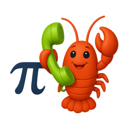

piclaw
A self-hosted AI agent workspace that actually works.
adaptive-cardsai-agentbuncoding-agentdockerllmpi-agentself-hostedtypescriptvncweb-uiworkspace

About
PiClaw packages the Pi coding agent runtime into a Docker container with a streaming web UI, persistent state, built-in tools, and no CDN dependencies. It's the agent I use daily — for writing, code, infrastructure, and research — running on a $5 server.
Features
What it does
Streaming web UI
Real-time chat with Markdown, KaTeX, Mermaid, Adaptive Cards. Thought and draft panels during generation. Branch conversations, side prompts, and queued follow-ups.
Workspace-native
Browse files, preview documents, drag-upload, reference files in prompts. Built-in code editor, terminal, Office/PDF/image viewers, draw.io, kanban, VNC client.
Multi-provider LLM
Anthropic, OpenAI, Azure, Gemini, Ollama, and any OpenAI-compatible endpoint. Switch mid-session, configure per-branch.
Persistent agent state
SQLite-backed messages, media, tasks, token usage, and encrypted keychain. Dream memory consolidation keeps long-running sessions coherent.
Rich built-in tooling
SSH, Proxmox, Portainer profiles. Browser automation via CDP. Image processing via Sharp. MCP server access via pi-mcp-adapter. Scheduled tasks.
Zero CDN, single container
Everything ships in one image. No external asset CDNs, no setup wizard. One `docker run` and you're live.
Under the hood
Architecture
Supervisor manages three services inside the container: the Bun-based agent runtime, an optional VNC display, and a Ghostty-backed web terminal. Agent state lives on a bind-mounted workspace volume. Extensions and skills are TypeScript modules hot-loaded at runtime.
Versions
Releases
v1.7.10
PiClaw v1.7.10 — Microserfs
2026-04-10
# PiClaw v1.7.10 — "Microserfs"
A patch release about office software, experimental integrations, and the ongoing effort to make modern work feel slightly less like a badly managed group project with sockets.
## Features
- **Experimental Microsoft 365 extension now ships in the bundle** — PiClaw can now package an env-gated M365 integration for Teams, Microsoft Graph, OneDrive, SharePoint, cale
v1.8.2
PiClaw v1.8.2 — Sliding Doors
2026-04-19
# PiClaw v1.8.2 — "Sliding Doors"
A patch release about interrupted turns, restored model state, and swipe navigation finally behaving like someone thought through what happens on phones after 2023.
## Features
- **Automatic turn recovery now has a proper user-facing shape** — interrupted turns can recover more deliberately, recovered replies carry an explicit marker in the timeline, stale in-f
v1.8.1
PiClaw v1.8.1 — Heat
2026-04-18
# PiClaw v1.8.1 — "Heat"
A point release about hardening the doors, slimming the startup path, and finally teaching the web client how to do push notifications without embarrassing itself in public.
## Platform news
- **Startup has been put on a stricter diet** — Azure bootstrap work, web viewer routes, bundled browser tooling, and office tooling have been shoved off the cold path so PiClaw can
v1.8.0
PiClaw v1.8.0 — This Is Spinal Tap
2026-04-16
# PiClaw v1.8.0 - "This Is Spinal Tap"
A hefty point release about making the web UI faster, the discovery surface smarter, the image pipeline unexpectedly ambitious, and the upstream model stack current enough to suggest someone has been feeding the amplifier after midnight.
## Features
- **PiClaw now picks up support for Anthropic Opus 4.7 via the upstream Pi core package updates** — the upst
v1.7.15
PiClaw v1.7.15 — Blow-Up
2026-04-15
# PiClaw v1.7.15 — "Blow-Up"
A release about seeing what the system is actually doing, surviving iPhone PWA melodrama, and giving operators better answers than a blank stare and a quietly compromised log file.
## Features
- **The `messages` tool grew into a proper audit surface** — it now supports `grep`, `extract`, and checkpoint `diff`, which makes chat-history forensics much less dependent o
v1.7.14
PiClaw v1.7.14 — Brazil
2026-04-14
# PiClaw v1.7.14 — "Brazil"
A patch release about making the operator surface clearer under pressure: better status hints, better timeout behavior, better terminal and compose ergonomics, and fewer situations where provider failures vanish into the wallpaper like a procedural memo nobody meant to approve.
## Features
- **Added `/effort` as an alias for `/thinking`, with provider-native level la
v1.7.13
PiClaw v1.7.13 — The Paper Chase
2026-04-13
# PiClaw v1.7.13 — "The Paper Chase"
A release about operator ergonomics, search behaving properly, and giving the M365 extension enough actual skills to justify its paperwork — which feels especially on-brand for a Monday the 13th, a date apparently engineered to combine bureaucracy with menace.
## Features
- **The experimental M365 extension now ships eleven operator-facing skills** — which m
v1.7.12
PiClaw v1.7.12 — The Conversation
2026-04-12
# PiClaw v1.7.12 — "The Conversation"
A release about seeing more, guessing less, and making the web UI slightly less likely to surprise you in ways nobody ordered.
## Features
- **The session tree viewer is now properly useful instead of merely promising to be** — `/tree` gained a search/filter box, more compact rows, theme-derived role tags, fuller sidebar detail, human-readable tool argument
History
Recent commits
2026-04-19
build: rebuild dist for session timeout defaults + update release docs
abce3fda
2026-04-19
Increase default compaction idle wait to 300s
c130922f
2026-04-19
Make session idle wait timeouts configurable via env vars
53f7011f
2026-04-19
build: rebuild dist for recovery chip styling
6c949b95
2026-04-19
fix(web): recovery chip — smaller font, human-readable tooltip
84286ea9
2026-04-19
fix(web): tone down recovery chip — use theme colors, subtler label
8214bf6b
2026-04-19
build: rebuild dist for Windows path hotfix
b520399d
2026-04-19
Consolidate path-safety helpers; fix Windows editor-vendor 403
d11eeb95
2026-04-19
build: rebuild dist bundles and sync workitems for v1.8.2
6e9e564f
2026-04-19
fix(ci): replace second silent catch in stamp-cache-buster with explicit log
990d4b6f
2026-04-19
build: refresh generated dist for v1.8.2 retag
eb0cd082
2026-04-19
Return provider usage for branch chats without live sessions
00679f94
2026-04-19
Use content-hash cache busters instead of epoch timestamps
e0773282
2026-04-19
Reset model/context state on chat switch to prevent stale display
8e80c85c
2026-04-19
fix(ci): replace silent catch in stamp-cache-buster with explicit warning log
941eb4c7
2026-04-19
fix(web): bust stale vendor bundle cache — stamp importmap URL + fix broken cache-buster regex
877971d5
2026-04-19
fix(web): exclude Apple Pencil from chat swipe navigation
7a1fda17
2026-04-19
fix(web): don't overwrite cached context usage with null API response
4d529520
2026-04-19
Update generated dist for branch recovery skip-replay
8ef6f186
2026-04-19
Skip replay for branch chats on startup/stale recovery (no session context)
1056abfd
Writing
On taoofmac.com
2026-03-08
So You Want To Do Agentic Development